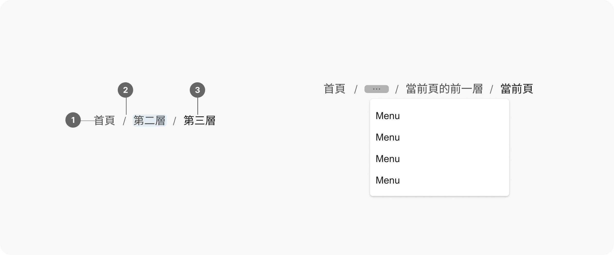

Breadcrumbs 麵包屑
概述
麵包屑是一種次要導航元件，用於顯示使用者在網站或應用程式中的當前位置，通過顯示頁面層級關係，幫助使用者了解資訊架構和內容層級。麵包屑中的每個元素都代表一個頁面或位置，它通常從最高層級（例如首頁）開始，逐步顯示到當前頁面，每個層級之間用分隔符號隔開，提供使用者輕鬆透過點擊該元素以返回到該頁面或位置。這樣的設計讓使用者更容易理解網站或應用程式的結構，並快速找到相關內容。
使用時機
麵包屑常用於以下情境：
- 多層級結構的網站或應用程式：幫助使用者輕鬆了解他們在層級結構中的位置，並提供返回上一層級的便捷方式。
使用規範
當您取用麵包屑元件進行設計時，應考慮以下原則：
- 文字易讀性：麵包屑中的文字應保持簡短且易於理解。請避免使用冗長或模糊的文字。
- 連結樣式：
- 當前頁面：當前頁面應以不同的樣式呈現，例如使用不同的顏色、字體或移除連結樣式，本設計規範定義為移除連結樣式。
- 其他頁面：其他頁面的連結應該具有明確的連結樣式，例如底線、顏色變化或懸停效果，本設計規範定義為顏色變化。
- 省略層級：當層級過多時，省略中間的某些層級可以避免麵包屑過長，進而影響頁面佈局和可讀性。
- 其他注意事項：
- 麵包屑應作為輔助導航元件，不應取代主要導航或局部導航。
- 建議在三層以上資訊層級結構時使用麵包屑設計。對於三層以下的結構，麵包屑為非必要存在，因為在層級較少的情況下，麵包屑能提供的價值有限，反而會浪費寶貴的螢幕空間。
- 如果要引導使用者完成多步驟流程，請使用能更清晰地顯示步驟和進度的步驟元件。
- 請顯示網站層次結構項目，而不是使用者造訪的歷史路徑。
設計範例

- 層級連結 (Level Link)：路徑以首頁連結開始，每個層級為文字超連結（當前頁面除外）。
- 分隔符號 (Separator)：用於分隔不同的層級，以“>”清楚地區分每一頁。
- 當前頁面 (Current Page)：麵包屑路徑中的最後一項，使用唯讀文字。
- 溢出選單 (Overflow Menu)：當層級過多或空間有限時，可以省略中間的某些層級。選單元件規範請參考目錄。